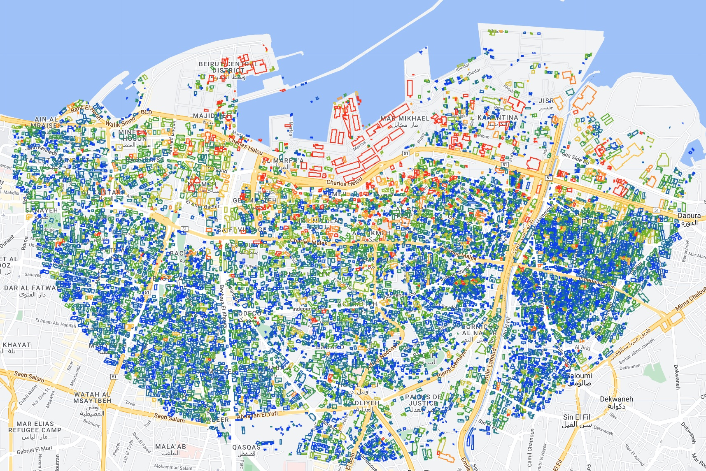
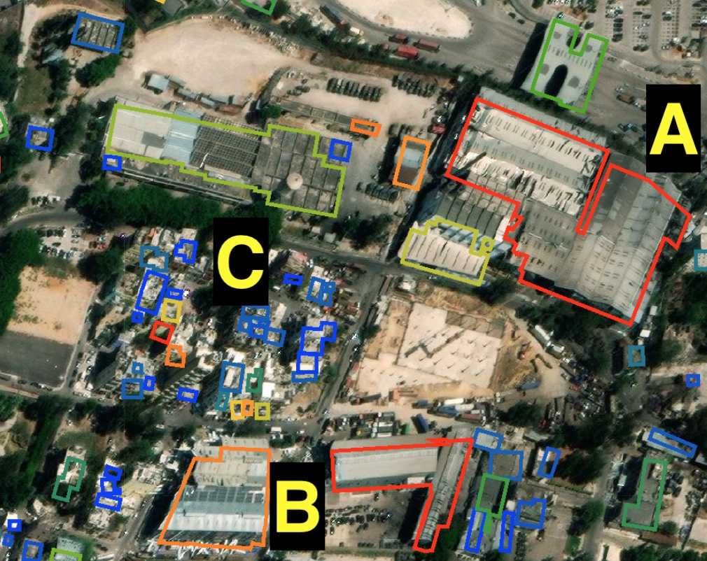
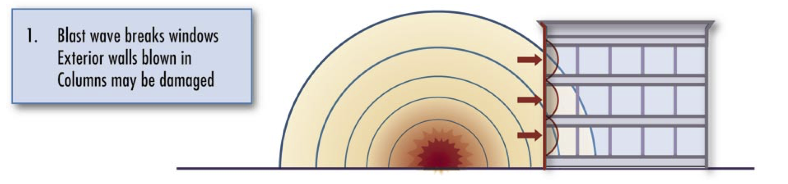

Blast Damage Assessment
On August 4th, 2020, a warehouse full of fertilizer in the port of Beirut exploded. The blast killed over 200 people, injured thousands, and caused widespread damage to the city:
Assessing blast damage is a common task for open source investigators, and satellite imagery analysis is one of the best tools we have at our disposal to analyze this sort of phenomenon. NASA used Sentinel-1 imagery in the aftermath of the explosion to generate an estimated damage map. They explain that Sentinel-1 Synthetic Aperture Radar (SAR) imagery is good for this sort of task:
“SAR instruments send pulses of microwaves toward Earth’s surface and listen for the reflections of those waves. The radar waves can penetrate cloud cover, vegetation, and the dark of night to detect changes that might not show up in visible light imagery. When Earth’s crust moves due to an earthquake, when dry land is suddenly covered by flood water, or when buildings have been damaged or toppled, the amplitude and phase of radar wave reflections changes in those areas and indicates to the satellite that something on the ground has changed.”
The NASA team produced this estimate the day after the explosion, which is very impressive. However, due to the quick turnaround, they were pretty light on the description of their methodology (they didn’t provide any code, or even explicitly say how exactly they generated the estimate), making their analysis hard to replicate. They also failed to validate their results, which is a critical step in any analysis.
In this case study we’ll be developing our own change detection algorithm from scratch, applying to Sentinel-1 imagery of Beirut before and after the blast, and validating our results using building footprints and U.N. damage estimates as the ground truth. Below is the final result of the analysis, which shows building footprints colored according to the predicted level of damage they sustained from the blast:
Change Detection
There are many ways to detect change between two images. The simplest way would be to take an image taken before an event, and subtract it from an image taken after. This is a good way to get a general sense of where change has occurred, but if you only use two images (one before an event and another after), it would be difficult to differentiate between areas that have changed as a result of the event in question, and areas that have changed for other reasons. Things in Beirut (and cities in general) are constantly changing: construction, cars/planes/ships moving, vegetation growing, etc. So we wouldn’t know if the change we’re seeing is a result of the explosion or whether that area is generally prone to change. We can overcome this by comparing a bunch of pre-event images to a bunch of post-event images. This way we can see if the change we’re seeing is consistent across all of the images. If it is, then we can be fairly confident that the change is a result of the event in question. The mean is simply the sum of all the values (\(x_i\)) in a set divided by the number of values (\(n\)):
\[\large \overline{x} = \frac{1}{n} \sum_{i=1}^n x_i\]
But if we just take the average pixel value before and subtract the average pixel value after, we’re not accounting for the variability of that pixel’s values. For example, if we have a pixel that has had an average value of 1 for the month before the event, and a value of 2 in the month after the event, the difference is 1. If that pixel’s value is extremely consistent (it never varies by more than 0.1), such a change would be very significant. But if that pixel’s value is very variable (it varies by 2 or even 3 on a regular basis), then the change is not significant. So we need to account for the variability of the pixel’s values using the standard deviation. It is calculated as the square root of the variance, which is the average of the squared differences from the mean:
\[\large s = \sqrt{\frac{1}{n-1} \sum_{i=1}^n (x_i - \overline{x})^2}\]
With just the mean and the standard deviations of two sets of numbers, we can use a statistical test to determine whether the change in means is significant. The simplest way to do this is to use a pixelwise t-test, which is basically just a signal-to-noise ratio: it calculates the difference between two sample means (signal), and divides it by the standard deviations of both samples (noise). In this case, the two samples are the pre- and post-event images. The t-test is applied to each pixel in the image, allowing us to determine whether the change is statistically significant. Given two groups, \(x_1\) before the event, and \(x_2\) after the event, the \(t\) statistic is calculated as:
\[ \Large t = {\frac{\overline{x_1}-\overline{x_2}} {\sqrt{\frac{s^2_1}{n_1} + \frac{s^2_2}{n_2}}}} \]
Where:
- \(\overline{x}\): Sample Mean
- \(s^2\): Sample Standard Deviation
- \(n\): Number of observations
This procedure gives us a number called a t-value, which is a measure of how many standard deviations the difference between the two means is. We’re not going to get into the details here, but a rule of thumb is that if the t-value is greater than 2, then the difference between the two means is significant. If the t-value is less than 2, then the difference is not significant. We’re going to calculate the t-value for each pixel in the image to determine whether that pixel has changed significantly following the event in question. You don’t need to know the details of the t-test to understand the results (but hopefully you’ve got an intuition for what it’s doing). If you’re interested in learning more about statistical tests of this sort, I teach a course on Data Science at the University College London, and have made all of the lectures and courseware open-source. The T-test lecture is here.
Implementing a t-test in Earth Engine
Now lets go about implementing this in Earth Engine. We’ll start by centering the map on the port of Beirut, and setting the map to satellite view, and defining an area of interest (AOI) as a 3km buffer around the port:
Map.setCenter(35.51898, 33.90153, 15);
Map.setOptions("satellite");
var aoi = ee.Geometry.Point(35.51898, 33.90153).buffer(3000);Next, let’s define a function in earth engine that will perform the T-Test. The block of code below defines a function to implement a t-test for every pixel in a set of images. The function will be called ‘ttest’, and takes four arguments:
- s1: the image collection
- shock: the date of the event
- pre_interval: the number of months before the event
- post_interval: the number of months after the event
The function will return a t-value image, which we can use to determine whether a pixel has changed significantly following the event in question.
function ttest(s1, shock, pre_interval, post_interval) {
// Convert the shock date to a date object
var shock = ee.Date(shock);
// Filter the image collection to the pre-event period
var pre = s1.filterDate(
shock.advance(ee.Number(pre_interval).multiply(-1), "month"),
shock
);
// Filter the image collection to the post-event period
var post = s1.filterDate(shock, shock.advance(post_interval, "month"));
// Calculate the mean, standard deviation, and number of images for the pre-event period
var pre_mean = pre.mean();
var pre_sd = pre.reduce(ee.Reducer.stdDev());
var pre_n = ee.Number(pre.filterBounds(aoi).size());
// Calculate the mean, standard deviation, and number of images for the pre-event period
var post_mean = post.mean();
var post_sd = post.reduce(ee.Reducer.stdDev());
var post_n = ee.Number(post.filterBounds(aoi).size());
// Calculate the pooled standard deviation
var pooled_sd = pre_sd
.multiply(pre_sd)
.multiply(pre_n.subtract(1))
.add(post_sd.multiply(post_sd).multiply(post_n.subtract(1)))
.divide(pre_n.add(post_n).subtract(2))
.sqrt();
// Calculate the denominator of the t-test
var denom = pooled_sd.multiply(
ee.Number(1).divide(pre_n).add(ee.Number(1).divide(post_n)).sqrt()
);
// Calculate the Degrees of Freedom, which is the number of observations minus 2
var df = pre_n.add(post_n).subtract(2);
print("Number of Images: ", df);
// Calculate the t-test using the:
// mean of the pre-event period,
// the mean of the post-event period,
// and the pooled standard deviation
var change = post_mean
.abs()
.subtract(pre_mean.abs())
.divide(denom)
.abs()
.subtract(2);
// return the t-values for each pixel
return change;
}An important detail in the code above is that we’ve actually tweaked the t-test slightly, in two ways.
First, the algorithm above returns tha absolute value of t (i.e. the absolute value of the difference between the two means). This is because we’re interested in whether the pixel has changed at all, not whether it’s changed in a particular direction. Second, we’ve subtracted 2 from the t-value.
The t-value is a measure of how many standard deviations the difference between the two means is. Generally speaking, if the t-value is greater than 2, then the difference between the two means is considered statistically significant. 2 is a fairly arbitrary cutoff, but it’s the most commonly used one since it corresponds to the 95% confidence interval (i.e., there’s less than a 5% chance of observing a difference that big due to random chance). Now we’ve got a function that can take an image collection and return a t-value image, where a value greater than 0 corresponds to a statistically significant change between the pre-event and post-event periods.
Filtering the Sentinel-1 Imagery
We can’t just blindly apply this algorithm to the entire image collection, because the image collection contains images from both ascending and descending orbits. We need to filter the image collection to the ascending and descending orbits, and then calculate the t-value for each orbit separately: this is because the satellite is viewing the scene from a completely different angle when it’s in ascending and descending orbits, which will generate a lot of noise in our data. In fact, even when the satellite is either ascending or descending, we can have multiple images of the same place taken from slightly different orbital tracks because these overlap (see this visualization of orbits). We need to filter the image collection to the relative orbit number that is most common within the image collection. For that, we define a new function called ‘filter_s1’, which takes a single argument: the path (either ‘ASCENDING’ or ‘DESCENDING’).
function filter_s1(path) {
// Filter the image collection to the ascending or descending orbit
var s1 = ee
.ImageCollection("COPERNICUS/S1_GRD")
.filter(ee.Filter.listContains("transmitterReceiverPolarisation", "VH"))
.filter(ee.Filter.eq("instrumentMode", "IW"))
.filter(ee.Filter.eq("orbitProperties_pass", path))
.filterBounds(aoi)
.select("VH");
// Find the most common relative orbit number
var orbit = s1
.aggregate_array("relativeOrbitNumber_start")
.reduce(ee.Reducer.mode());
// Filter the image collection to the most common relative orbit number
var s1 = s1.filter(ee.Filter.eq("relativeOrbitNumber_start", orbit));
// Calculate the t-test for the filtered image collection using the function we defined earlier
var change = ttest(s1, "2020-08-04", 12, 2);
// Return the t-values for each pixel
return change;
}You’ll notice that we’ve called the ttest function we defined earlier with four arguments:
- s1: the Sentinel-1 image collection filtered to the ascending or descending orbit
- 2020-08-04: the date of the explosion
- 12: the number of months before the explosion to use for the pre-event period; I’m choosing to include the full year prior to the explosion to get a good baseline
- 2: the number of months after the explosion to use for the post-event period; I’m including 2 months after the explosion. Much less than that, and we risk missing the effects of the explosion. Much more than that, and we risk including the effects other changes that happened after the explosion, including the reconstruction effort.
Now we want to apply this function to the image collection twice (once for each orbit) and then combine the two images into a single image. After that, we can clip it to the area of interest and display it on the map:
// Call the filter_s1 function twice, once for each orbit, and then combine the two images into a single image
var composite = ee
.ImageCollection([filter_s1("ASCENDING"), filter_s1("DESCENDING")])
.mean()
.clip(aoi);
// Define a color palette
var palette = ["440154", "3b528b", "21918c", "5ec962", "fde725"];
// Add the composite to the map
Map.addLayer(
composite,
{ min: 0, max: 4, opacity: 0.8, palette: palette },
"change"
);The visualization parameters correspond to the statistical significance of the change in pixel values. Using the Viridis color palette which ranges from purple to yellow, dark purple pixels indicate no significant change, and yellow pixels indicate a significant change with with 95% confidence. The brighter the yellow of a pixel, the more significant the change.

This seems to be working quite well; but remember, ports are generally prone to change. The t-test is accounting for this by calculating each pixel’s variance over the entire time period, but it’s still possible that the change we’re seeing is due to the port rather than the explosion. To test this, we can run the same algorithm on the same area, using the same date cutoff (August 4th), but in a different year; I’ve chosen 2018. This is what’s known as a placebo test: if it’s still showing loads of statistically significant change around the cutoff, our algorithm is probably picking up on port activity rather than the explosion.

Compared to the 2020 image, there’s a lot less yellow (significant change). That being said, there are a few yellow areas. This could be due to a number of reasons: ships coming and going, cranes moving, and containers being loaded and unloaded would all register in the change detection algorithm. There are also a number of yellow specks throughout the city, which is also to be expected since cities are also generally in a state of flux. Construction, demolition, and even the growth of vegetation can all be detected by the algorithm.
However, the scale and quantity of the change is nowhere near what it was for the 2020 image. This is a good sign that the algorithm is detecting change resulting from the explosion.
Validation
Great. We’ve developed our very own change detection algorithm in earth engine, applied it to the Beirut explosion, and it seems to be working after checking with a basic placebo test. But how do we know that it’s correctly predicting the extent of the damage, and not wildly over/underestimating?
Given that this was a few years ago, we have the benefit of hindsight. In particular, the United Nations and the Municipality of Beirut have published a report on the damage caused by the explosion. This report includes estimates of the number of buildings damaged or destroyed, as well as the number of people displaced. The report states that approximately 10,000 buildings were damaged within a 3 kilometre radius of the port. If our algorithm suggests that only 1,000 buildings were damaged, it’s undershooting. If it suggests that 100,000 buildings were damaged, it’s overshooting.
Using building footprint data and the t-test image we just generated, we can createe an estimate of the number of damaged buildings according to our model. First, we want to generate a thresholded image, where pixels with a value greater than 0 are set to 1, and all other pixels are set to 0. We can then use this mask to reduce the building footprints to a single value for each building, where the value is the mean of the t-test image within the footprint. If the mean value is greater than 0, the building is damaged. If it’s less than 0, the building is not damaged.
// Create a mask of the t-test image, where pixels with a value greater than 0 are set to 1, and all other pixels are set to 0
var threshold = composite.updateMask(composite.gt(0));
// Load the building footprints
var buildings = ee
.FeatureCollection("projects/sat-io/open-datasets/MSBuildings/Lebanon")
.filterBounds(aoi);
// Calculate the mean value of the t-test image within each building footprint
var damaged_buildings = threshold.reduceRegions({
collection: buildings,
reducer: ee.Reducer.mean(),
scale: 1,
});
// Print the number of buildings with a mean value greater than 0
// i.e., those displaying statistically significant change
print(damaged_buildings.filter(ee.Filter.gt("mean", 0)).size());The result is 9,256, which is pretty damn close to 10,000. We can also visualize the building footprints on the map, colored according the mean value of the t-test image within the footprint, where:
- Blue = no damage
- Green = low damage
- Yellow/Orange = medium damage
- Red = high levels of damage
// Create an empty image
var empty = ee.Image().byte();
// Paint the building footprints onto the empty image
var outline = empty.paint({
featureCollection: damaged_buildings,
color: "mean",
width: 5,
});
// Define a color palette
var building_palette = [
"0034f5",
"1e7d83",
"4da910",
"b3c120",
"fcc228",
"ff8410",
"fd3000",
];
// Add the image to the map
Map.addLayer(
outline,
{ palette: building_palette, min: 0, max: 2 },
"Damaged Buildings"
);The result naturally resembles the underlying t-test image, with high levels of damage concentrated around the port, and progressively decreasing damage with distance:

To get a better sense of how these predicitions correspond to actual damage, we can zoom in and turn on the Google satellite basemap, which has imagery taken just after the explosion; you can still see capsized boats in the port. Zooming in to the epicenter, we can see several warehouses that were effectively vaporized. Our change detection algorithm picks up on a high degree of change, as indicated by the red outlines of the building footprints:

This is pretty low-hanging fruit. Let’s look at a different area, around 1.3km east from the epicenter with a mix of warehouses and residential buildings:

Here, there’s greater variation in the predictions. I’ve highlighted three areas.
In Area A, we see a warehouse with a highly deformed roof; panels of corrugated iron are missing, and much of the roof is warped. The building footprint for this warehouse is red, suggesting that our algorithm correctly predicts a significant amount of blast damage.
In Area B, we see a medium-rise building. If you look closely at the southern edge of the building, you’ll see the siding has been completely torn off and is laying on the sidewalk. The building footprint is orange, suggesting a medium amount of change. We may be underestimating a bit here.
In Area C, there are a bunch of high rise buildings clustered together. The building footprints are all blue, suggesting little to no damage. This is a bit of a surprise given how damaged areas A and B are. If you squint at the satellite image, it is indeed hard to tell if these buildings are damaged because we’re looking at them from the top down, when much of the damage (e.g., the windows being blown out) would only be visible from the side. Indeed, our own estimate of the number of damaged buildings based on the algorithm we developed is about 8% shy of the U.N.’s estimate. This may be why.
Conclusion
In this practical example, we created a custom change detection algorithm that conducts a pixelwise t-test to detect change resulting from the 2020 explosion in the port of Beirut. By defining our own functions to do most of this analysis, we can apply the same workflow quite easily to a different context by simply moving the AOI and inputting the date of the shock. A placebo test showed that it’s not just detecting general change in the area, but specifically change resulting from the explosion: when we keep everything the same but change the year of the shock, we see very little significant change being detected. Finally, by joining the predicted damage map to building footprints, we come up with an estimate of 9,256 damaged buildings, which is pretty close to the U.N.’s estimate of 10,000. That concludes the portion of this case study that deals with Earth Engine, but if you’re interested in learning more about why we’re coming up a bit short on the damage estimate (and some different ways of looking at the problem), read on.
Extension: Satellite Imagery and its Limits
Though satellite imagery analysis is undoubtedly one of the best tools we have at our disposal to analyze this sort of phenomenon, it appears to systematically underestimate the extent of damage in Beirut. I outline an alternative approach using Open Street Map data to create a 3D model of Beirut and the explosion to analyze directional blast damage. Again, we’re now leaving Earth Engine and moving to Blender, so if you’re not interested in that feel free to skip ahead to the next case study.
Below is one of the most viewed videos of the explosion:
Stunning video shows explosions just minutes ago at Beirut port pic.twitter.com/ZjltF0VcTr
— Borzou Daragahi 🖊🗒 (@borzou) August 4, 2020
Geolocating this video was pretty simple thanks to the Greek Orthodox church (highlighted in green below) and the road leading to it (highlighted in blue). The red box indicates the likely location (33.889061, 35.515909) from which the person was filming:

The video shows heavy damage being sustained by areas well outside the zones classified as damaged in the maps above (both my own and NASA’s). Indeed, substantial damage was reported several kilometers away.
Why are satellite images underestimating damage in Beirut? Satellite images are taken from above, and are two-dimensional. Much of the damage caused by the blast, however, was directional; the pressure wave hit the sides of buildings, as shown in this diagram from a FEMA manual:

Areas close to the explosion suffered so much damage that it could be seen from above, but even if an apartment building had all of its windows blown out, this would not necessarily be visible in a top-down view. Even for radar, which does technically collect data in three dimensions, the angle problem remains; a high resolution radar might be able to tell you how tall an apartment complex is, but it won’t give you a clear image of all sides. Case in point: the NASA damage map was created using Sentinel-1 SAR data. In a nutshell, damage assessment in this case is a three-dimensional problem, and remote sensing is a two-dimensional solution.
Creating a 3D model of Beirut
To create a more accurate rendering of directional blast damage, three dimensional data are required. Data from Open Street Maps (OSM) contains information on both the “footprints” (i.e., the location and shape) as well as the height of buildings, which is enough to create a three dimensional model of Beirut. 3D rendering was done in Blender using the Blender-OSM add-on to import a satellite basemap, terrain raster, and OSM data.
Geolocated videos of the blast can be used to verify and adjust the model. Below is a side-by-side comparison of the twitter video and a 3D rendition of OSM data:

Some slight adjustments to the raw OSM data were made to achieve the image on the right. The building footprints are generally very accurate and comprehensive in coverage, but the building height data does occasionally have to be adjusted manually. A simple and reliable way of doing this is to look at the shadows cast by the building on the satellite base map and scale accordingly. I also added a rough texture to the buildings to help differentiate them, and added the domed roof of the Greek Orthodox church for reference.
For good measure, a second video is geolocated following the same procedure:
Another view of the explosions in Beirut pic.twitter.com/efT5VlpMkj
— Borzou Daragahi 🖊🗒 (@borzou) August 4, 2020
The second pier (highlighted in green) and the angle (in blue) serve as references:

The video was taken from the rooftop of a Japanese restaurant called Clap Beirut (in red above). This is confirmed by a picture of the rooftop bar on google images, which matches the bar that can be seen at 0:02 in the twitter video. Below is a comparison of the video view and the 3D OSM model:

Though somewhat grainy, the basemap on the OSM rendering shows the same parking lot in the foreground, the second pier, and the same two buildings highlighted in yellow. Having created a 3D model of Beirut using OSM data, we can now simulate how the explosion would interact with the cityscape.
Using a Viewshed Analysis to Assess Blast Exposure
As the pressure wave moved through the Beirut, some buildings bore the full force of the explosion, while others were partially shielded by taller structures. A viewshed analysis can be conducted to identify surfaces that were directly exposed to the explosion by creating a lighting object at ground zero; areas that are lit up experienced unobstructed exposure to the blast:

Pressure waves, like sound, are capable of diffraction (bending around small obstructions). To roughly simulate this, the lighting object is gradually raised, allowing the light to pass “around” obstructions. Warehouses on the Eastern side of the docks, as well as the first row of apartment buildings facing the docks are immediately affected. As the lighting object rises above the warehouse, more areas suffer direct exposure.
Using two lighting objects– a red one at 10 meters and a blue one at 20 meters above the warehouse at ground zero– the intensity of the blast in different areas is highlighted; red areas suffered direct exposure, blue areas suffered partially obstructed exposure, and black areas were indirectly exposed.

In the immediate vicinity of the explosion the large “L” shaped building (Lebanon’s strategic grain reserve) is bright red, and was barely left standing. It absorbed a large amount of the blast, shielding areas behind it and thereby casting a long blue shadow to the West. If one refers back to the satellite damage maps above, there appears to be significantly less damage in the area just West of (“behind”) the grain silo, roughly corresponding to the blue shadow above. While these areas were still heavily damaged, they seem to have suffered less damage than areas of equal distance to the East.
Accounting for Diffraction
The viewshed analysis tells us which sides of a building are exposed to the blast, but it’s a pretty rough approximation of the way the pressure wave would respond to obstacles in its path. As previously mentioned, pressure waves behave much like sound waves or waves in water: they bounce off of objects, move around obstructions, and gradually fade.
To get a more precise idea of the way in which the blast interacted with the urban environment, we can model the blast as an actual wave using the “dynamic wave” feature in Blender. This effectively involves creating a two-dimensional plane, telling it to behave like water, and simulating an object being dropped into the water. By putting an obstruction in this plane, we can see how the wave responds to it. As an example, the grain silo has been isolated below:

As the blast hits the side of the silo, it is reflected. Two large waves can be seen traveling to the right: the initial blast wave, and the reflection from the silo which rivals the initial wave in magnitude. To the left, the wave travels around the silo but is significantly weakened.
Broadening the focus and adding the rest of the OSM data back in, we can observe how the pressure wave interacted with buildings on the waterfront:

The warehouses on the docks were omitted to emphasize the interaction between the pressure wave and the waterfront buildings; their light metal structure and low height means they would have caused little reflection anyway. The general pattern of the dynamic wave is consistent with the viewshed, but adds a layer of detail. The blast is reflected off of the silo towards the East, leading to a double hit. Though the wave still moves around the silo to the West, the pressure is diminished. Once the wave hits the highrises, the pattern becomes noisy as the wave both presses forward into the mainland and is reflected back towards the pier.
Modeling the Pressure Wave
Now that we’ve accounted for the directionality of the blast and the influence of buildings, we can model the pressure wave itself. An expanding sphere centered at ground zero is used to model the progression of the pressure wave through the city. To get a visual sense of the blast’s force, the color of the sphere will be a function of the pressure exerted by the pressure wave.
The pressure exerted by the explosion in kilopascals (kPa) at various distances can be calculated using the U.S. Department of Defemse’s Blast Effects Computer, which allows users to input variables such as the TNT equivalent of the ordnance, storage method, and elevation. Though there are several estimates, the blast was likely equivalent to around 300 tons of TNT. The direct “incident pressure” of the pressure wave is shown in blue. However, pressure waves from explosions that occur on the ground are reflected upwards, amplifying the total pressure exerted by the blast. This “reflected pressure” is shown in orange:
For reference, 137 kPa results in 99% fatalities, 68 kPa is enough to cause structural damage to most buildings, and 20 kPa results in serious injuries. 1-6 kPa is enough to break an average window. At 1km, the reflected pressure of the blast (18 kPa) was still enough to seriously injure. Precisely calculating the force exerted by an explosion is exceptionally complicated, however, so these numbers should be treated as rough estimates. Further analysis of the damage caused by the blast can be derived from the UN’s Explosion Consequences Analysis calculator which provides distance values for different types of damage and injuries.
Linking the values in this graph to the color of the pressure wave sphere provides a visual representation of the blast’s force as it expands. An RGB color scale corresponds to the blast’s overpressure at three threshold values.

By keeping the lighting object from the viewshed analysis and placing it within the expanding sphere of the pressure wave, we combine two key pieces of information: the pressure exerted by the blast (the color of the sphere), and the level of directional exposure (brightness).
Now, referring back to the two geolocated twitter videos from earlier, we can recreate the blast in our 3D model and get some new insights. Below is a side-by-side comparison of the first video and the 3D model:

Judging by the twitter video alone, it would be very hard to tell the fate of the person filming or the damage caused to the building that they were in. However, the 3D model shows that despite having an unobstructed view of the explosion, the incident pressure of the pressure wave had decreased significantly by the time it reached the viewing point. The blue-green color corresponds to roughly 15 kPa– enough to injure and break windows, but not enough to cause structural damage to the building.
The second twitter video was taken slightly closer to ground zero, but the view was partially obstructed by the grain silo:

Though the pressure wave probably exerted more pressure compared to the first angle, the partial obstruction of the grain silo likely tempered the force of the blast.
Assessing Damage to the Skyline Tower
As a concrete example of how this approach can be used to assess damage (or predict it, if one had the foresight), let us consider the Skyline Tower, pictured below following the explosion:

This partial side view shows two faces of the building, labeled “A” and “B” above. Side A was nearly perpendicular to the blast, and just 600m from ground zero. Based on the previous modeling, the pressure wave exerted roughly 40 kPa on this side of the building. The corner where sides A and B meet, highlighted in green, shows total destruction of windows, removal of most siding panels, and structural damage. The back corner, highlighted in red, shows many windows still intact, indicating that the maximum overpressure on this side of the building likely didn’t exceed 10 kPa. In other words, standing on the front balcony would likely have led to serious injury but standing on the back balcony would have been relatively safe.
The animation below shows the Skyline Tower as it is hit by the pressure wave, with sides A and B labeled:

The bright green color of the pressure wave indicates a strong likelihood of structural damage. Side A can be seen taking a direct hit, while side B is angled slightly away. Despite not being directly exposed to the blast, it likely still took reflective damage from some of the neighboring buildings. Both the incident overpressure indicated by the color of the sphere, as well as the relative brightness of sides A and B both correspond closely to the observed damage taken by the Skyline Tower.
Further Research
Though satellite imagery analysis is an indispensable tool in disaster response, it has limitations. Urban blast damage in particular is difficult to assess accurately because it is highly directional and much of it cannot be seen from a bird’s eye view. Using free and open source tools, an interactive 3D model of an urban explosion can be generated, allowing for a highly detailed investigation of directional blast damage. This can be achieved in three steps:
First, creating a 3D model of the urban area using Blender and Open Street Maps data. Second, conducting a viewshed analysis using lighting objects to gauge levels of unobstructed exposure to the pressure wave. Third, modeling the explosion using geolocated videos of the event and ordnance calculators. For added detail, a dynamic wave analysis can be used to more precisely model how the pressure wave interacts with buildings.
Once properly modeled, the explosion can be viewed from any angle in the city. The viewshed analysis can be calibrated more finely by ground-truthing various damage levels (e.g. broken windows) at different locations. In the absence of an official address registry in Beirut, OSM is already being used by the Lebanese Red Cross (donate here) to conduct neighborhood surveys assessing blast damage. As such, this type of damage analysis can quickly be integrated into relief efforts, adapted to model disasters in different cities, and can even be used to simulate the destructive potential of hypothetical explosions to promote readiness.